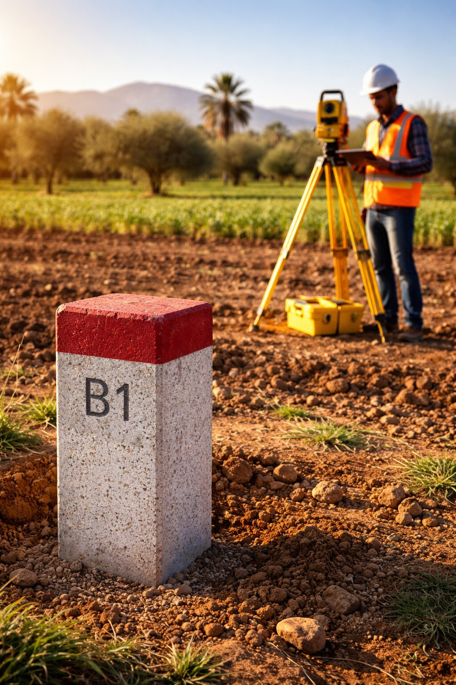
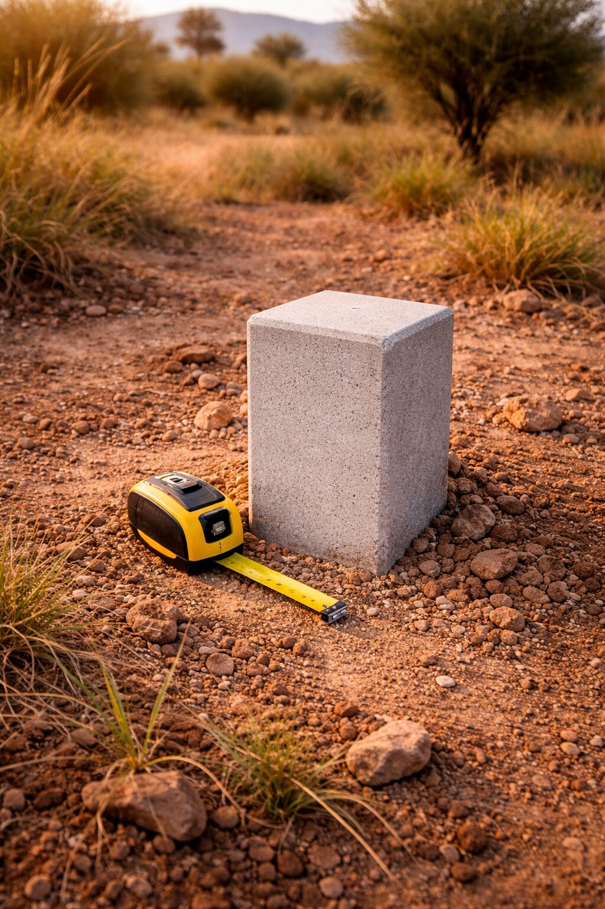

Displaced fences, buildings encroaching on a neighbouring plot, areas that don't match the title deed… Land disputes over property boundaries are common in Morocco. The best way to prevent them — or resolve them — is a property boundary survey.

What is a Boundary Survey?
A boundary survey is the operation by which a licensed surveying engineer determines and physically marks the exact limits of a property, in accordance with the title deed data and records held by the ANCFCC.
In practice, this involves:
- Retrieving the official coordinates of the plot's corner points
- Physically installing boundary markers (concrete or metal) at the limit points
- Drawing up a boundary survey report signed by the surveyor and ideally by neighbouring property owners
- The boundary survey report is a solid technical and documentary reference, recognised by the ANCFCC.
- Moving or destroying a boundary marker after an official survey may engage the liability of the person responsible.
- In the event of a dispute, a boundary survey is generally considered the most reliable evidence of a property's limits.
- It facilitates any update to the title deed with the ANCFCC.
When Should You Get a Boundary Survey?

Concrete boundary marker — official property limit
- Before purchasing land: verify that the actual area matches what was advertised
- Before building: ensure foundations comply with legal boundaries
- In the event of a dispute with a neighbour: materialise boundaries to avoid lengthy, costly litigation
- During an inheritance or donation: precisely identify each lot
- Before a subdivision: boundary surveys are a mandatory step in the subdivision file
- During a cadastral update with the ANCFCC
How Does a Boundary Survey Proceed?
-
Consultation of the title deed and cadastral plan
The engineer consults the ANCFCC's official documents to retrieve the legal coordinates of the plot's boundaries. If the title deed is old, archival research may be necessary.
-
Notification of neighbouring property owners
For a consensual survey (the most common), owners of adjacent plots are notified and invited to be present during the operation. Their written agreement strengthens the value of the survey.
-
Placement of boundary markers on site
Using GNSS instruments and the total station, the engineer calculates and materialises the limit points with centimeter-level precision. Markers are placed and numbered according to ANCFCC standards.
-
Drafting and signing of the boundary report
A boundary survey report describes the limits, markers placed, and calculated areas. It is signed by the surveying engineer and, ideally, by the parties present. This document is the key reference in the file.
-
Delivery of the complete file
The client receives the boundary plan (paper + DWG/PDF), the report, and the coordinate table for each marker. These documents can be directly included in an ANCFCC file.
Amicable vs. Court-Ordered Boundary Survey
- Amicable boundary survey: all parties agree on the boundaries. This is the quickest and least costly procedure, carried out by a surveying engineer mandated by mutual agreement.
- Court-ordered boundary survey: where disagreement persists, a party may apply to the relevant land tribunal. The judge then appoints an expert surveyor to carry out the boundary survey. STOPSIT regularly acts as a court-appointed expert.
A wire fence, a dividing wall, or stones placed by a neighbour do not constitute an official property boundary. Only markers installed by a licensed surveying engineer and included in a survey report carry recognised technical value and can serve as a reference in the event of a dispute.
How Much Does a Boundary Survey Cost in Morocco?
- The number of markers to be placed (related to the perimeter of the plot)
- The location of the land (urban, peri-urban, or rural area)
- The complexity of the documentary research (age of the title deed, archives to consult)
- Whether neighbouring property owners are present (amicable vs. contradictory survey)
STOPSIT provides a free quote within 24 hours. Contact us with the approximate area and location of your land.
Conclusion
A boundary survey is a modest investment compared to the cost of a land dispute. Carried out by a licensed professional, it durably protects your assets and gives you a solid basis for your property boundaries.
STOPSIT carries out boundary surveys in Kénitra, Rabat, Sidi Slimane, Fquih Ben Saleh, and across Morocco — for over 20 years.